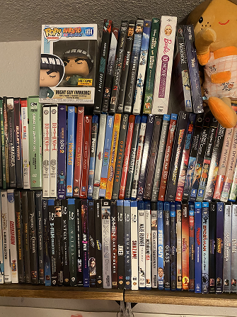
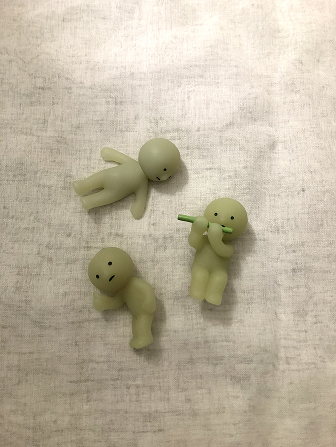

Portal Page
Learning Journal
Hello and Welcome to my Learning Journal Blogs!
Game Design Research
March 4, 2025
In the article, “Game Design Principles,” by Juegoadmin, the author discusses seven essential game design principles that should be practiced by game developers and designers. The author claims these principles help ensure the game is user-centered and enjoyable. One principle is to set clear goals and objectives within the game. Providing players with goals gives them a reason to move forward within the game. Another principle that stood out to me was incorporating feedback and rewards. Feedback helps the player in the game, while rewards incentivize the player to continue playing. An example of a game that offers a reward system is Pokemon TCG Pocket. Not only does Pokemon TCG Pocket give the users feedback and advice about which decks to play, but it also provides daily rewards and booster packs for users to open when they log in. In my opinion, having a reward system upon logging in incentivizes players to continue playing consistently.
Overall, I enjoyed reading the article and thought it was interesting and insightful. It gave me a better understanding of game design and development, and I plan to incorporate many of the principles in my game on design.
Visual Thinking Analysis
February 13, 2025
My partner’s photo is a picture of her CD collection. I think that the photo is great because it illustrates her collection and interests in movies. I like how the image shows three rows of CDs and also includes a Naruto figurine. I also like how the picture is colorful, fun, and organized. One suggestion that I gave was to maybe have the CDs be intractable with a hover state or modal/overlay pop-up.

My photo is of three Smiski figurines. Smiski is a popular Japanese blind-box character series. In this photo, they are in different stances/poses. I love how Smiskis can interact with their environments. For example, the one playing the flute can sit on table edges, while the one holding a thumbs up can stand upright on my desk. I think this image is interesting because it reflects my interest. At the moment, I love collecting and looking at Smiskis. This image relates to my topic because I believe a Smiski would be an item I would drop in a video game. I think that Smiskis are very fun, and I enjoy seeing how they interact with my workspace. In my opinion, I would update the image by incorporating a layover/modal that gives a more in-depth explanation of what Smiskis are and why they are special to me.

Visual Thinking Stategies Research
February 10, 2025
The article, “10 Intriguing Photographs to Teach Close Reading and Visual Thinking Skills,” by Michael Gonchar, Gonchar discusses the importance of visual thinking skills. Gonchar introduces the three-question facilitation method – a visual thinking strategy that encourages viewers to observe and analyze details of an image, infographic, or reading. These open-ended questions are recommended because they enable viewers to notice details, make inferences, and explain their thought processes with supporting evidence. Gonchar explains how visual thinking strategies help students learn through observation and discussion, ultimately enabling them to take agency in their thinking and ideas.
Chimdi Chimereze's portfolio website uses images and interactions in an interesting and engaging way. In my opinion, the portfolio is very visually stunning and interactive. Chimereze employs numerous visual elements to convey their interests, projects, and hobbies. In my opinion, the website feels fun, engaging, and personal. In addition to learning about Chimereze’s professional design work, I can get to know them personally through their hobbies and daily routines -- both shown through visual imagery.
I think that Chimereze’s interactive portfolio engages with viewers and urges them to want to learn more. For example, Chimereze’s portfolio website utilizes hover states to reveal books they are reading. These hover states also reveal hobbies that they are interested in. One potential weakness of a website that uses unique images and interactions is that it could be distracting or overstimulating. For example, in my opinion, the moving clouds in the background of Chimereze's website were a little distracting because of how quickly they moved. Overall, I loved interacting with the portfolio, and think that it was beautiful, engaging, and fun.
Best Practices for Modals / Overlays / Dialogue Windows
January 30, 2025
The article, “Best Practices for Modals / Overlays / Dialogue Windows,”
by Naema Baskanderi, Baskanderi discusses best tips on how to effectively implement modals within a design. Modals are elements that appear on top of the parent page. Usually, when they appear, they introduce new information that can be relevant for the user. Modals are popular because they allow designers to show more information on a page without having to disrupt the page’s original design and structure. However, using them may also introduce pain points for users. As a result, there are many tips to practice to incorporate them seamlessly and efficiently.
For example, users should be given the option to leave the modal. Baskanderi discusses the importance of allowing the user autonomy over whether or not they want to engage with the modal. Furthermore, she emphasizes the importance of clear descriptive titles and call to action buttons. Modals with these features are easier to navigate and understand. One tip in the article that stood out to me was that modals should be placed on the upper part of the screen for responsiveness in mobile views. In hindsight, I think that the article was very informative and helpful.
Best Practices for Form Design
January 25, 2025
In the article, “Best practices for form design,” by Salim Ansari, I learned about twenty best tips for creating user-centered form designs. I was intrigued to learn more about minimizing the input fields of forms. In my classes, I learned about cognitive overload and how it can lower user satisfaction and a product’s overall productivity. I think that this tip also ties in well with the one column layout suggestion.
In the past, I have used Google Forms for conducting and answering user surveys for project case studies. I like that Google Forms is intuitive and easy to use for first-time users. After reading the article, I realized that many of the best tips are practiced by Google Forms – such as a one column layout. In my opinion, Google Form’s one column layout allows users to fill out the form more efficiently. Furthermore, users can answer the questions in a chronological order. I also noticed that Google Forms has many labels that increase readability and informational hierarchy. Overall, I think that the article was very insightful and interesting. It gave me more perspective on forms and their designs.